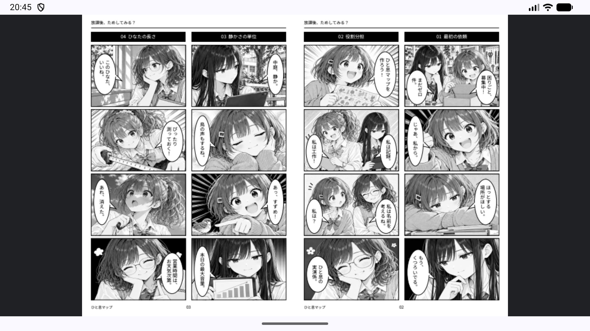
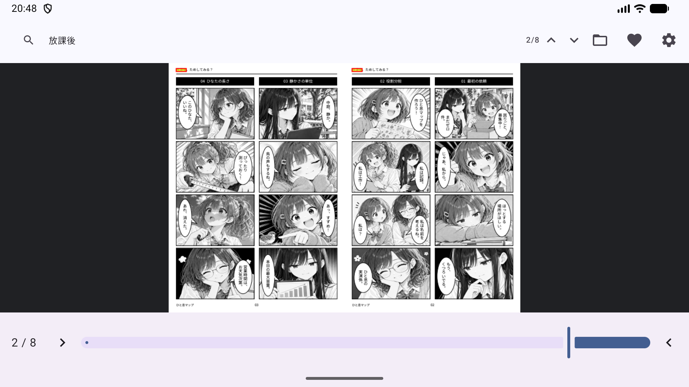
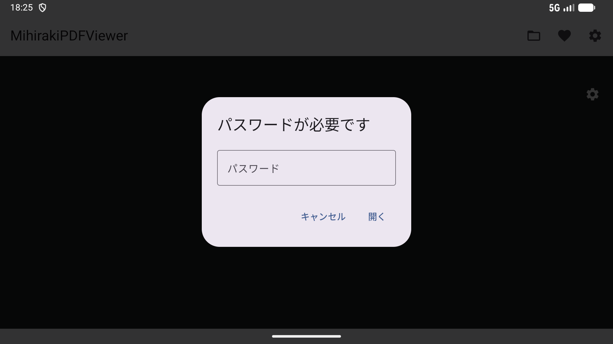
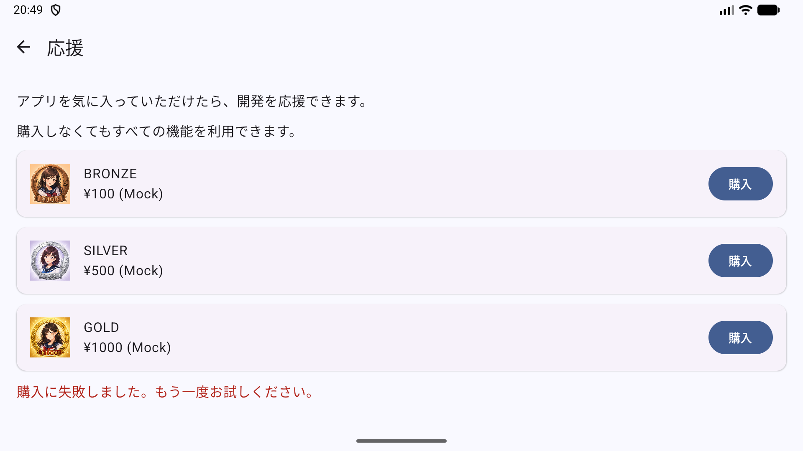
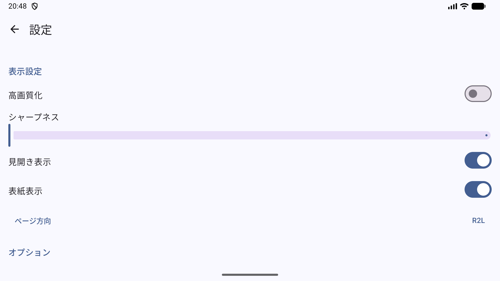

日本特有の「見開き」と「右綴じ」を快適に楽しむためのAndroid用PDFビューア
2つのページを横に並べてシームレスに表示。漫画や画集の迫力をそのままに楽しめます。
日本の書籍に最適な右から左への読書順序をネイティブサポート。ページ移動も直感的です。
PDFのメタデータから最適な表示レイアウトと綴じ方向を自動で判別します。
高速なテキスト検索と、ヒット箇所の精密なハイライト表示機能を搭載しています。





以下のサンプルPDFファイルで MihirakiPDFViewer をお試しください：
『ためし部』第1話・第2話
© 2026 こまいろ日和
本作品のうち、公開者が著作権その他の許諾対象となる権利を有する部分を、Creative Commons 表示 4.0 国際（CC BY 4.0）で提供します。
https://creativecommons.org/licenses/by/4.0/
再利用時は、作品名、作者名「こまいろ日和」、原作品の公開元、ライセンスへのリンクを表示し、変更した場合はその旨を明示してください。
本作品は、文章・画像の制作および翻訳に生成AIを使用しています。フォントなど第三者に権利がある素材には、それぞれのライセンスが適用されます。著作権等による保護を受けない部分の利用を、この表示によって制限するものではありません。
MihirakiPDFViewerはプライバシーを最優先に設計されています。
※Googleドライブ等のクラウドストレージからファイルを開く場合にのみ、各サービスのプロバイダを介した通信が発生します。
基本無料（広告なし）
本アプリは完全に無料でご利用いただけます。PDFの閲覧、見開き表示、検索といったすべての機能は、購入の有無にかかわらず制限なくお使いいただけます。
※本アプリには「開発者への応援（投げ銭）」としてアプリ内購入が含まれています。応援してくださった方には、設定画面に特別な記念バッジが表示されます。